Our activities
From hosting Nigerian delegations in Paris to trade missions, investment clubs and presidential visits, here is a record of the engagements our members have led and supported.
2023
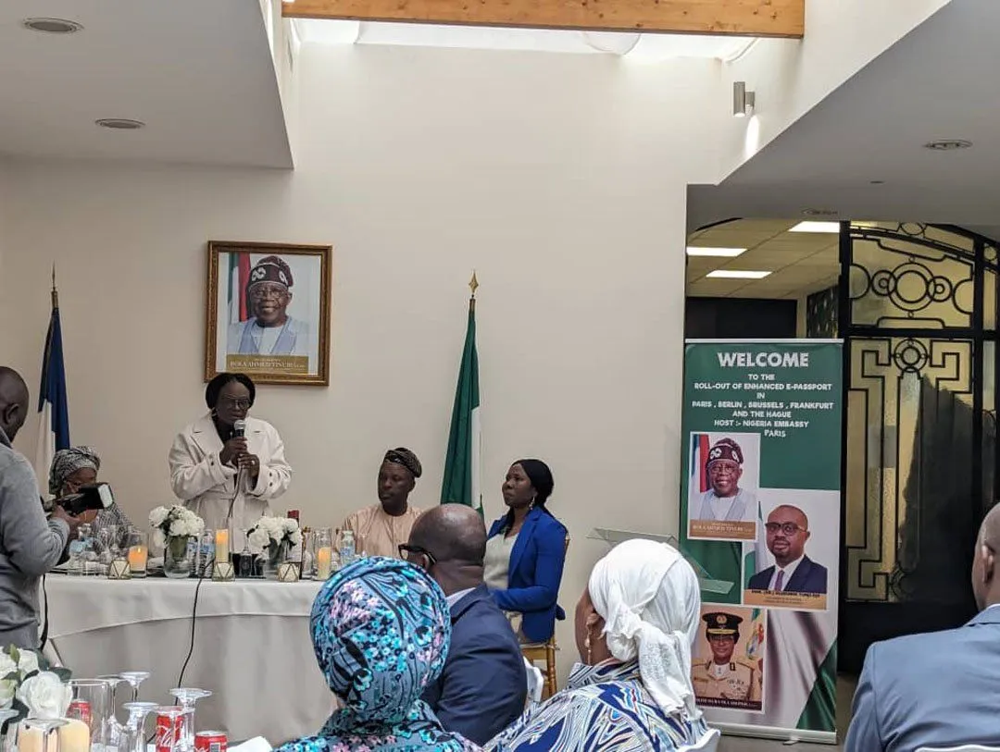
Launch of the e-Passport by the Nigeria Immigration Service and the Embassy of Nigeria in Paris
View 6 photos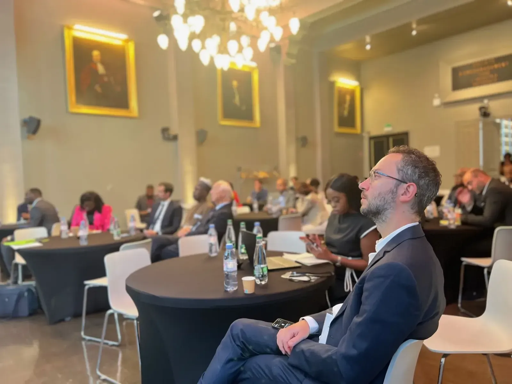
Spotlight Nigeria 2023
View 24 photosFirst visit of President Tinubu to France
View 7 photos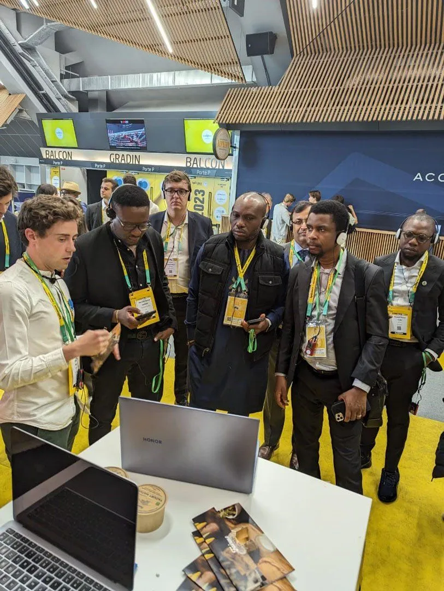
Bpifrance Inno Generation (BIG) 2023
View 7 photos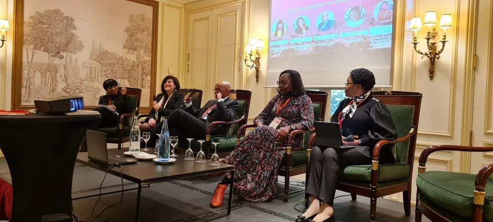
FON at AIFA 2023
View 7 photos
2022
2021
2019
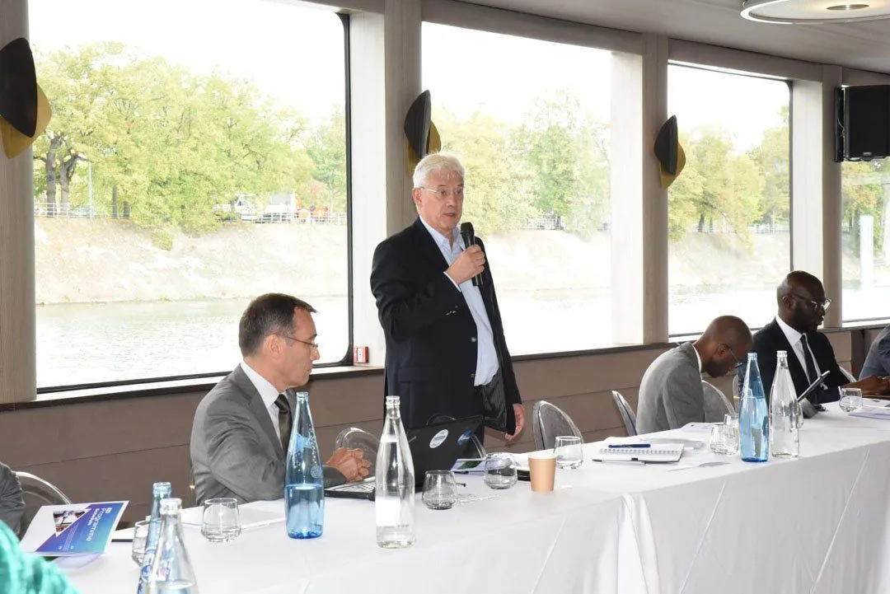
Launch of the Nigeria-France Tech Initiative (NFTI) in Paris
View 17 photos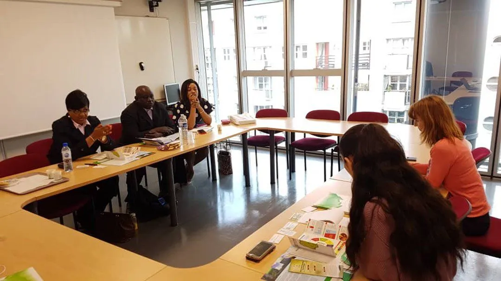
Hosting NEPZA from Nigeria
View 3 photosVisit of Governor Babajide Sanwo-Olu of Lagos State to Paris
View 5 photos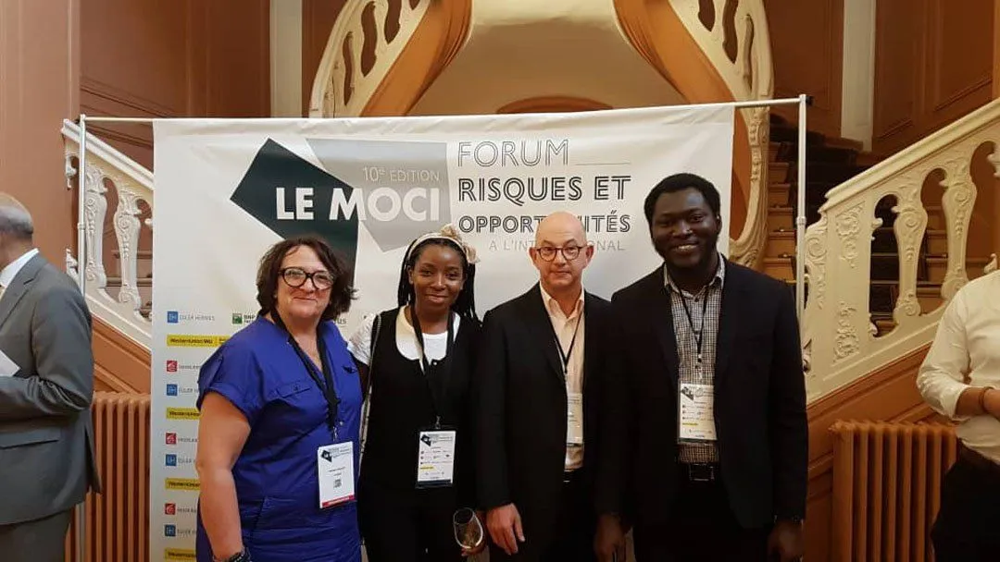
Le Moci Forum
View 3 photosHosting WIMBIZ Nigeria in Paris
View 5 photos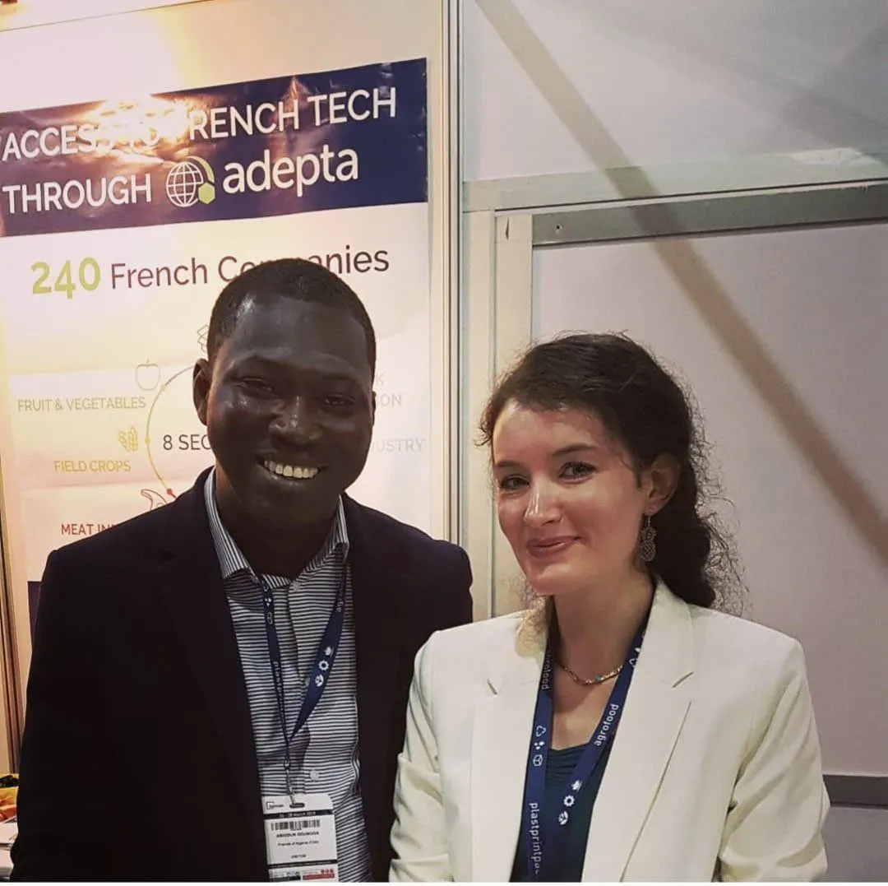
Trade mission to Nigeria with ADEPTA
View 9 photos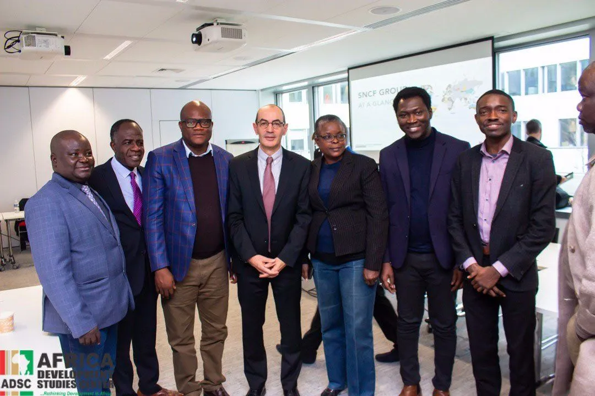
Hosting SERVICOM from Nigeria in Paris at SNCF
View 11 photos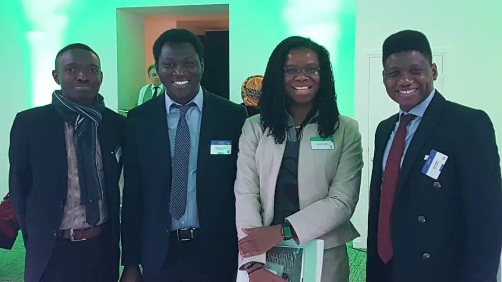
France Nigeria Investment Club
View 10 photosSpotlight Nigeria 2019
View 24 photos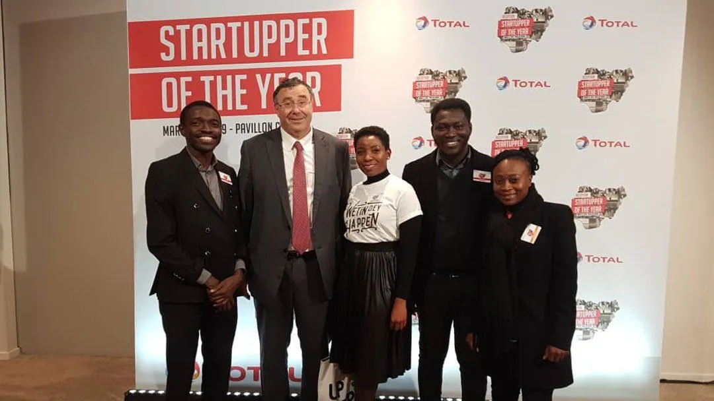
Total Startupper Challenge 2019 in Paris
View 7 photos
2018
2017
Be part of a network creating opportunities between Nigeria and Europe.
Join Nigerian professionals and European companies building partnerships, sharing expertise and opening doors on both continents.